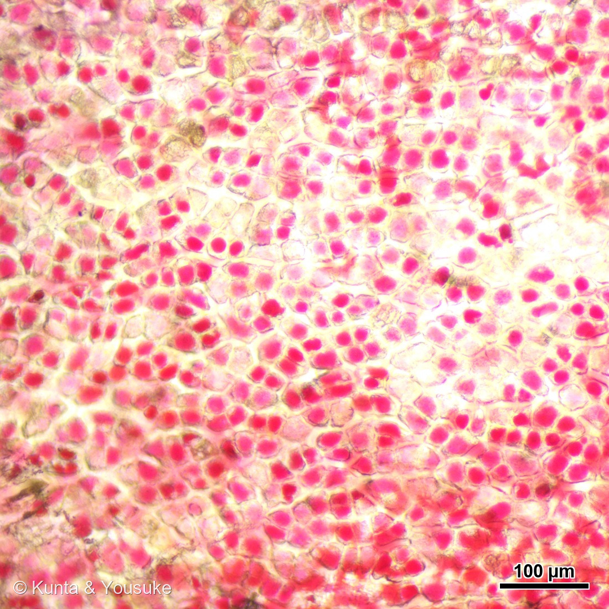
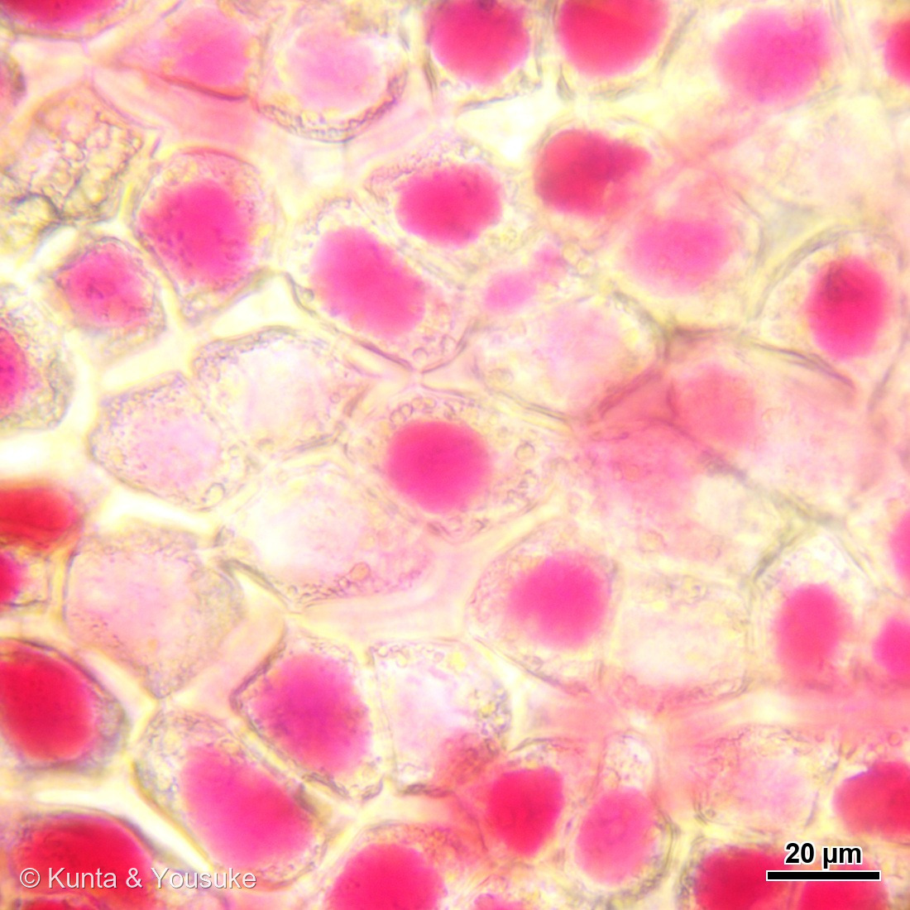
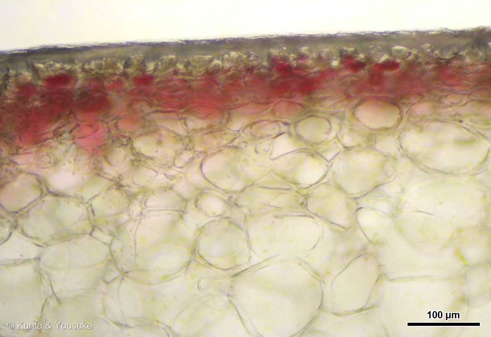
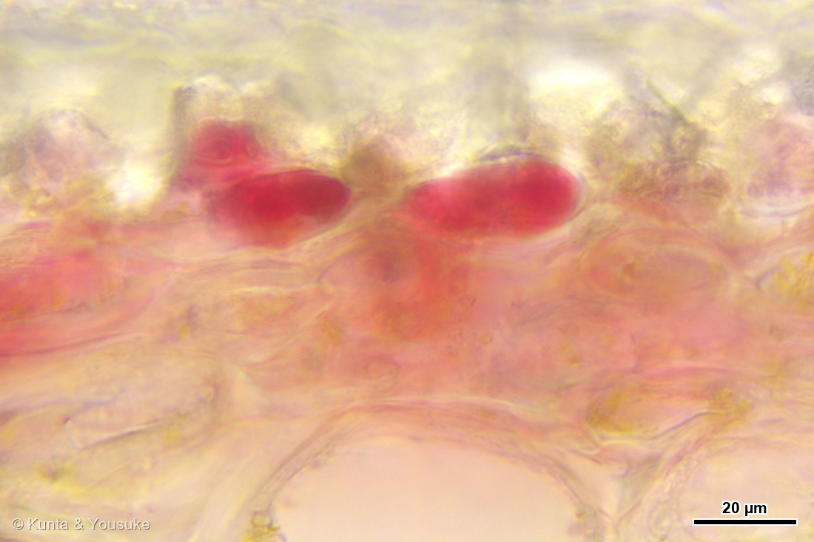
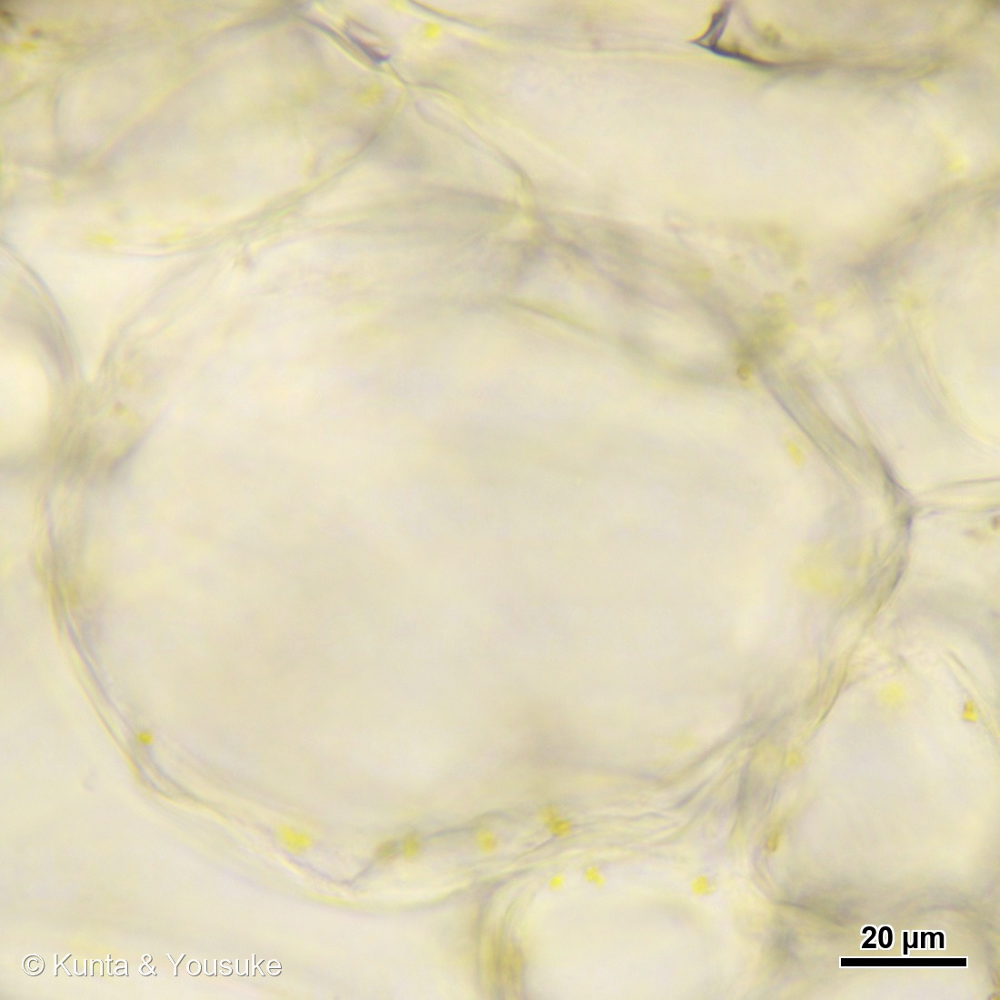

地図を読み込んでいるよ…
🔍 写真も地図も、押しているあいだ拡大して見られるよ（スマホは指を置いてすこし待ってね）。
🌍 の地図＝この子がもともと自生している場所を緑に。栽培リンゴ（セイヨウリンゴ）の主な祖先は、中央アジアの天山山脈の西側にひろがる野生種 Malus sieversii とされる。カザフスタン最大の都市アルマトイは、現地の言葉で「リンゴの里」という意味。そこからシルクロードを通って西へ渡り、ヨーロッパで別の野生種と交雑して、いまのリンゴになった。日本のリンゴ産業は明治時代に欧米から来た品種で始まった。品種「ふじ」は1939年に青森県で生まれた日本育ちの品種だよ。くわしくは下の地図の説明を見てね。
⭐この緑は、いま食べているリンゴの「ふるさと」ではなく、祖先のふるさとだよ。栽培リンゴ（セイヨウリンゴ）の主な祖先は、中央アジアの天山山脈の西側にひろがる野生種 Malus sieversii とされる。⭐⭐カザフスタン最大の都市アルマトイは、現地の言葉で「リンゴの里」という意味なんだ。⭐ここで栽培化されたものがシルクロードを通って西へ運ばれ、ヨーロッパで別の野生種 Malus sylvestris と交雑して、いまのリンゴになったと考えられている。⚠⚠だから、この地図は「種のふるさと」ではない＝いま世界じゅうで作られている Malus domestica は、この緑の中で生まれたわけではなく、この緑を出発点にして人が作ってきたものなんだ。⚠塗ったのは天山山脈のまわりの国（カザフスタン・キルギス・中国の新疆・タジキスタン・ウズベキスタン）で、出典が名指ししているのはカザフスタンと「天山山脈の西側」まで＝⭐あとはぼくが山なみの位置から広げたもの。ちがう読み方をしたので、正直に書いておくね。⭐⭐⭐そして、この地図でいちばん大事なのは「日本が緑じゃないこと」＝日本のりんご産業は、明治時代に欧米から来た品種とともに始まった。⭐⭐でも、ぼくらが食べた品種「ふじ」は、日本生まれ＝1939年に青森県の藤崎町で「国光」に「デリシャス」を交配して作られ、いまでは世界でいちばん多く作られているリンゴなんだ（⭐本文を見てね）。⭐つまりこの子は、緑の外で生まれて、緑の外から世界へ広がった子だよ。⭐同じバラ科ナシ連の279 ナシは東アジアの子で、143 シャリンバイは日本の海べりの子＝⚠同じ連の三人が、ずいぶんちがう場所から来ているね。⭐おまけのセイヨウナシは、ヨーロッパから西アジアのほうの子だよ。
⚠ 地図は国（日本と中国だけ県・省）までしか塗れないから、ほんとうの分布より広く見えていることがあるよ。地図はだいたいの場所。正確なところは、上の文を見てね。
リンゴ（林檎）／品種「ふじ」
Malus domestica Borkh.
学名の意味 · ⭐Malus＝ラテン語で「リンゴ」／domestica＝家の・栽培された 別名 セイヨウリンゴ 英名 apple
バラ科 · Rosaceae（リンゴ属 Malus・ナシ連 Maleae・バラ目 Rosales）── ⭐果実は「ナシ状果（梨果・pome）」／⭐⭐279 ナシ・143 シャリンバイと同じナシ連だよ
燻太さんの言葉「今日は朝ごはんのリンゴを顕微鏡観察したよ。表皮、皮の縦断面、果肉の細胞の3つを撮影した。」── ⭐スケールバーは、ぼくらが自分で較正した値で描き直したよ
⭐⭐⭐ 名前と学名の由来 ── 「ふじ」の名前には、三つの説がある
- 和名リンゴは「林檎」。学名は Malus domestica Borkh. で、属名 Malus はラテン語で「リンゴ」そのもの、種小名 domestica は「家の・栽培された」という意味だよ。
- ⭐⭐⭐そして、この子は品種「ふじ」。──1939年に、青森県の園芸試験場東北支場（いまの藤崎町）で、「国光」に「デリシャス」を交配して生まれた。⭐最初に実がなったのが1951年ごろ、1958年に「東北7号」と呼ばれ、1962年3月に「ふじ」と名づけられた（青森県藤崎町／日本語版Wikipedia）。
- ⭐⭐⭐⭐⭐「ふじ」という名前の由来が、三つあるんだ。──①生まれた土地の藤崎町②富士山③当時の女優山本富士子さん。⚠どれか一つに決まってはいない＝⭐三つが重なった名前、ということみたい。
- ⭐1982年にデリシャス系を抜いて日本一になり、いまは日本でも世界でも、いちばん多く作られているリンゴの品種（同）。⭐燻太さんの朝ごはんは、世界でいちばん食べられているリンゴだったんだね。
⭐⭐ この植物のこと ── リンゴは「ふくらんだ花托」を食べている
- バラ科リンゴ属の落葉高木。⭐そして、リンゴの実はナシ状果（梨果・pome）だよ。⭐ぼくらが食べている部分の大部分は、子房ではなく、そのまわりの花托がふくらんだもの。⭐芯のかたいところが、ほんとうの子房。
- ⭐⭐⭐⭐⭐ここで、143 シャリンバイとつながる。──あのページで、ぼくはこう書いた＝「梨果を作るのは、バラ科の中のナシ連（Maleae）だけ。リンゴ・ナシ・ビワ・ナナカマド…」／「⭐リンゴのおしりのブツブツ、あれと同じもの。次にリンゴを食べるとき、おしりを見てみてね。」
- ⭐⭐⭐図鑑が「次にリンゴを食べるとき」と呼びかけていて、その朝が今日きた。⚠でも、今回の写真にはおしりが写っていないんだ＝⏳だから、それは宿題にしたよ。
- ⭐栽培リンゴのふるさとは、中央アジア＝天山山脈の西側にひろがる野生種 Malus sieversii が主な祖先とされる。⭐⭐カザフスタン最大の都市アルマトイは、現地の言葉で「リンゴの里」という意味なんだ。
⭐⭐⭐⭐⭐ 顕微鏡で見た① ── リンゴの赤は、皮の「すぐ下」にあった
- ⭐写真③を見てほしい。──いちばん上に、うすい皮（クチクラと表皮）。⭐そのすぐ下に、赤い帯。⭐そして下半分は、大きくてすきまだらけの果肉の細胞。
- ⭐⭐赤い帯の厚みを、この写真の中で測ったら約137µmだった（対物10倍・1px＝0.625µm）。⭐リンゴの赤は、皮の表面ではなく、皮のすぐ内側の数層ぶんにだけ入っているんだ。
- ⭐⭐⭐⭐⭐そして、写真②（対物40倍）がすごい。──赤いのは細胞の壁ではなくて、細胞の中身。⭐ひとつの細胞の中に、丸い赤いかたまりが、ぽんと入っている。
- この赤の正体はアントシアニン。⭐農林水産省は「リンゴの赤い色は果皮の細胞でつくられるアントシアニンという色素によるもので、実が熟しはじめて糖が増えるころにでき、日光と低温が必要」と説明している。⭐アントシアニンは細胞の中で作られて、液胞にためられるとされるよ。
- ⚠ただし、写真で見えた赤は「細胞いっぱいに広がった液」ではなく、丸いかたまりだった。⭐液胞の中で色素がかたまりを作ることがある、という話は聞くけれど、この写真だけでそうだと決めるわけにはいかない＝⏳宿題にしておくね。
- ⭐赤い細胞ひとつの幅は約27µm（対物10倍で測ったとき）。⚠40倍で測ると27〜43µmとばらついた＝⭐細胞の並びの向きで変わるので、「30µm前後」くらいに思っておくのがよさそう。
⭐⭐⭐⭐⭐ 顕微鏡で見た② ── シャリシャリの正体は、「すきま」だった
- ⭐写真⑤を見てほしいな。──大きな細胞が、うすい壁でつながっている。⭐⭐そして、細胞と細胞が出会う角のところに、すきまが空いているのが見える。
- ⭐この写真の細胞は約51µm（対物40倍・1px＝0.147µm）。⚠ただしこれは皮に近いところの果肉だよ＝⏳芯に近いほうはもっと大きいはずなので、宿題にした。
- ⭐⭐⭐⭐⭐そして、この「すきま」＝細胞間隙が、リンゴのシャリシャリの正体なんだ。──Frontiers in Plant Science（2015）は「リンゴの細胞間隙は、品種によっては果実の体積の30%にもなる」と書いている。⭐中身は空気で、酸素が減って二酸化炭素が増え、水蒸気でほぼ飽和しているという。
- ⭐⭐つまり、リンゴをかじったときのあの音は、細胞がつぶれる音であると同時に、すきまがつぶれる音でもあるんだね。
- ⭐⭐⭐⭐⭐ここが、この回でいちばん書きたかったところ。──279 ナシを思い出してほしいんだ。
- 和ナシの「ジャリッ」は、石細胞のせいだった＝リグニンで厚く硬くなった細胞が、かたまりになって果肉に散らばっている。⭐279では、そのかたまりを顕微鏡で見て、紫外線で青白く光らせたよね。
- リンゴの「シャリッ」は、その正反対＝石細胞はほとんど無く、大きくて壁のうすい細胞と、そのあいだのすきまでできている。⭐同じバラ科の、同じナシ連の、となりどうしの二人なのに、食感の作りかたが逆なんだ。⭐⭐⭐同じ「果肉」という言葉でも、中身はこんなにちがう。──⭐それを、ぼくらは自分の顕微鏡で、両方見たことになるよ。
⭐⭐ 大きさは、どうやって測ったか
- ⭐顕微鏡の写真は、「何倍で撮ったか」が分からないと、大きさが言えない。⚠だから、この回はそこにいちばん時間をかけたよ。
- ⭐やったこと＝同じ赤い表皮細胞を、10倍で撮った写真と40倍で撮った写真の両方で測って、ぼくらの較正で同じ大きさになるかを見た＝10倍で26.6µm、40倍で27〜43µm＝⭐そろった。
- ⭐⭐この確かめかたが大事なのは、「ソフトが出す数字を信じなくてすむ」から＝⭐もし倍率の設定がまちがっていても、この方法なら気づける。⭐この5枚のスケールバーは、ぼくらが自分でミクロメーター（目盛りのガラス板）を撮って作った較正値で描いたものだよ。
- ⭐写真の横幅は、対物10倍で約0.7mm、対物40倍で約0.16mm＝⚠40倍の1枚は、髪の毛2本ぶんくらいの幅しか写っていないんだ。
出典：青森県藤崎町「りんご「ふじ」発祥の地」／日本語版Wikipedia「ふじ (リンゴ)」（1939年に青森県の園芸試験場東北支場で「国光」に「デリシャス」を交配して育成／1951年ごろ初結実／1958年に「東北7号」／1962年3月に「ふじ」と命名され、同年4月に「りんご農林1号」として登録／名前の由来は藤崎町・富士山・女優の山本富士子の三説／1982年にデリシャス系を抜いて日本一になり、いまは日本でも世界でも最も多く生産されている品種）／農林水産省「りんごが赤い理由を教えてください。」（リンゴの赤い色は果皮の細胞でつくられるアントシアニンという色素によるもので、実が熟しはじめて糖が増えるころにでき、日光と低温が必要）／日本語版Wikipedia「アントシアニン」（アントシアニンは植物の細胞内で作られ、液胞に蓄積される）／Frontiers in Plant Science（2015）「Spatial development of transport structures in apple (Malus × domestica Borkh.) fruit」（リンゴの細胞間隙は品種によっては果実の体積の30%に達する／その中身は空気で、酸素が減り二酸化炭素が増え、水蒸気でほぼ飽和している／果実の中心から外側へ向かって、細胞間隙による多孔性はしだいに増える）／日本語版Wikipedia「リンゴ」ほか（栽培リンゴ（セイヨウリンゴ）は中央アジアの Malus sieversii に由来し、天山山脈の西側の集団が起源と考えられている／カザフスタン最大の都市アルマトイは現地語で「リンゴの里」／シルクロードを通って西へ運ばれ、ヨーロッパで Malus sylvestris と交雑して現在のセイヨウリンゴが成立した／日本のりんご産業は明治時代のアメリカ系の西洋りんごとともに始まった）／⭐この図鑑の 279 ナシのページ（和ナシのジャリッとする食感は石細胞によるもので、リグニンで厚く硬くなった細胞がかたまりになって果肉に散らばる）／⭐この図鑑の 143 シャリンバイのページ（梨果を作るのはバラ科の中のナシ連（Maleae）だけで、リンゴ・ナシ・ビワ・ナナカマドなど／リンゴのおしりのブツブツは萼の跡）／⭐ぼくらの顕微鏡の較正（プロファイル cam25mp_05x・2026-08-06測定／対物10倍 0.2395 µm/px・対物40倍 0.0531 µm/px）